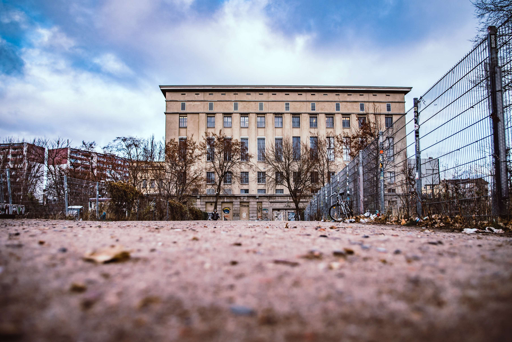

BERGHAIN
It’s not without a reason that this club has been voted the best club in the world several times. People from all over the world visit Berlin just to visit this techno-club. In the end it’s the combination of a great venue with a spectacular line-up and extreme opening-hours which makes this techno-club in Berlin so popular. The Techno Temple is located on the site of the old Ostbahnhof. The queues are long, the security tough. Even those who have stood their legs in their stomach for hours do not necessarily come in. However, if you are lucky and be waved through, you can look forward to an unforgettable experience . Berghain offers larger floors: The main floor usually offers techno and then there is the Panorama Bar with a bit more funky tunes. On Fridays usually only Panorama Bar is open and on that day the parties are usually a bit less crazier than on Sundays. As some of you might know, Berghain is a gay-club from origin and some of the events can get pretty wild.
TRESOR

One of the most unique techno-clubs in Berlin is definitely Tresor. This club is located under the ground and feels like a war bunker. This Berliner club goes way back and was opened in 1991. Unfortunately the first location (in the Leipziger Straße) was closed down in 2005. Lucky enough a new location was found in 2007: It can be found not far from station Heinrich-Heine Straße between Berlin-Mitte and Kreuzberg. Three floors offer enough space for dancing, while the basement with its solid concrete walls brings back memories of the old safe.Visiting Tresor is a special experience. The combination of an underground-bunker, an overload of blacklight and plenty of proper techno-sounds will definitely leave an impression. The door-policy is not as strict as many other Berliner techno-clubs. The entrance for a party-night in this club costs about 15 Euro and the parties normally go on till lunch-time the next day.
BERGHAIN
It’s not without a reason that this club has been voted the best club in the world several times. People from all over the world visit Berlin just to visit this techno-club. In the end it’s the combination of a great venue with a spectacular line-up and extreme opening-hours which makes this techno-club in Berlin so popular. The Techno Temple is located on the site of the old Ostbahnhof. The queues are long, the security tough. Even those who have stood their legs in their stomach for hours do not necessarily come in. However, if you are lucky and be waved through, you can look forward to an unforgettable experience . Berghain offers larger floors: The main floor usually offers techno and then there is the Panorama Bar with a bit more funky tunes. On Fridays usually only Panorama Bar is open and on that day the parties are usually a bit less crazier than on Sundays. As some of you might know, Berghain is a gay-club from origin and some of the events can get pretty wild.